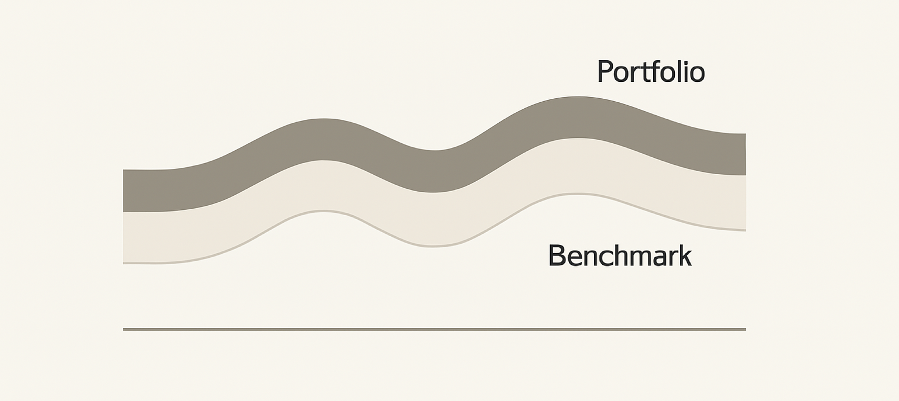
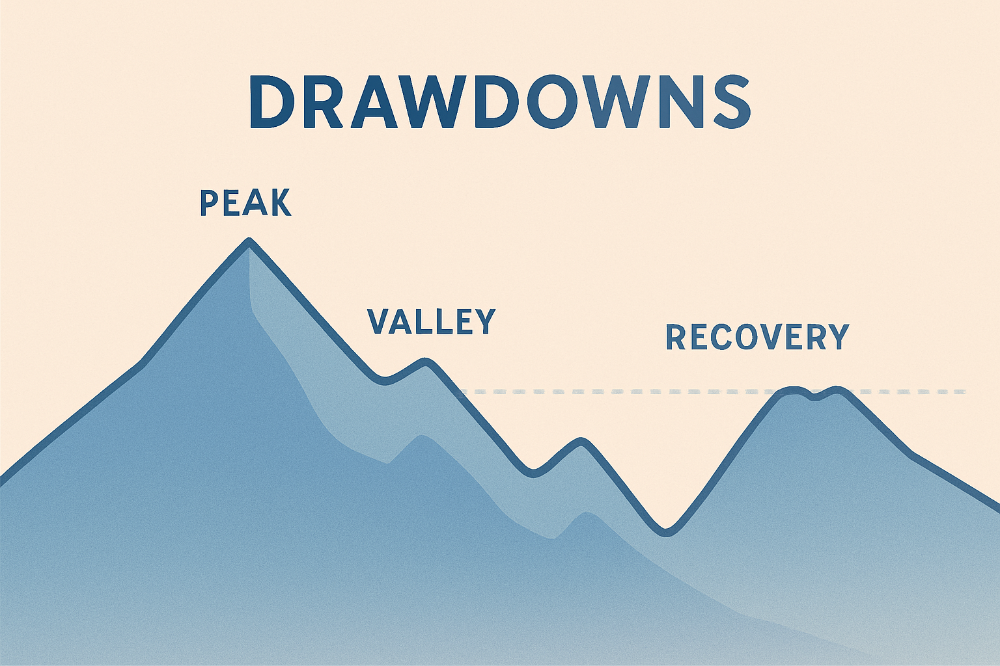

16 Performance verstehen – wie gut läuft dein Portfolio?
Es gibt diesen einen Moment, den alle Anleger früher oder später erleben: Du öffnest die App deines Brokers, schaust auf dein Portfolio – und fragst dich: „War das jetzt gut? Oder hätte ich mehr rausholen können?“
Lisa kennt diesen Moment gut. Nach einem Jahr Investieren fühlt sie sich sicherer als früher, aber sobald sie die Performance-Zahlen sieht, rutscht ihr Herz trotzdem kurz in die Hose. „Plus 7,8 %. Klingt eigentlich gut“, sagt sie, „aber ist das wirklich gut?“
Samir lacht. „Das hängt davon ab, womit du es vergleichst.“ „Super“, antwortet Lisa trocken. „Also weiß ich es eigentlich gar nicht.“
Und genau deshalb gibt es dieses Kapitel.
Du lernst hier – ohne Mathematik, ohne Formeln und ohne Stress – wie du die Performance deiner Anlagen intuitiv und richtig beurteilst. Nicht, ob sie „perfekt“ war (das ist sie nie), sondern ob du auf einem guten Weg bist. Und ob du als langfristige Anlegerin oder Anleger das tust, was wirklich zählt.

16.1 Warum Performance messen überhaupt wichtig ist
Viele Anfänger glauben, dass Performance messen bedeutet, ständig hinter jeder Zahl herzurennen, jede Woche die Gewinne zu checken oder im Monatsrhythmus Vergleiche zu ziehen. Das Gegenteil ist der Fall.
Performance verstehen heißt:
👉 Ruhe statt Panik
👉 Orientierung statt Rätselraten
👉 Klarheit statt BauchgefühlWenn du weißt, wie man die Entwicklung seines Portfolios richtig misst, kann dich kaum etwas aus der Bahn werfen. Besonders wichtig ist das aus drei Gründen:
1. Du erkennst, ob du deinen eigenen Plan einhältst.
Nicht der Markt ist dein Maßstab, sondern dein persönliches Ziel. Hast du langfristig investiert? Sparst du regelmäßig? Rebalancierst du? Die Performance sagt dir, ob du deiner eigenen Strategie treu geblieben bist.
2. Du siehst, ob dein Risiko angemessen ist.
Ein Portfolio kann 20 % Gewinn machen – und gleichzeitig viel zu riskant für deine Lebenssituation sein. Oder es kann 3 % machen – und vollkommen perfekt sein.
3. Du verhinderst gefährliche Fehlinterpretationen.
Menschen neigen dazu, gute Phasen zu überschätzen und schlechte Phasen zu dramatisieren. Ein klarer Performance-Kompass schützt dich davor.
Samir fasst es gut zusammen:
„Performance messen heißt nicht, das perfekte Ergebnis zu finden – sondern zu verstehen, was passiert ist und warum.“
16.2 Rendite verstehen – ohne Mathe, wirklich
Wenn Anfänger nach drei Monaten minus 3 % sehen, fühlen sich viele schlecht. Wenn sie plus 5 % sehen, fühlen sie sich plötzlich genial.
Beides ist falsch.
Rendite sieht nur kurzfristig aus wie ein Urteil über deinen Erfolg. Langfristig ist sie eher eine Momentaufnahme – wie das Wetter.
👉 Rendite ist wie die Temperatur eines Tages.- Ein kalter Tag ist nicht schlimm.
- Ein heißer Tag bedeutet nicht, dass die ganze Woche so wird.
- Keine einzelne Zahl sagt dir, ob du „gut“ unterwegs bist.
Und doch ist Rendite eine der wichtigsten Kennzahlen, die wir haben.
Damit du sie intuitiv verstehst, reicht eine einfache Definition:
Rendite zeigt dir, wie stark dein Geld in einem bestimmten Zeitraum gearbeitet hat – unabhängig davon, wie viel du einzahlst.
Das bedeutet: Ob du 100 € oder 10.000 € investiert hast – „+5 %“ meint denselben wirtschaftlichen Effekt: dein Kapital hat sich um fünf Prozent verändert.
Was Rendite nicht ist:
- ein Qualitätsurteil
- ein Hinweis auf deine Intelligenz
- eine Prognose
- ein Versprechen für die Zukunft
Rendite sagt nur, wo dein Portfolio jetzt steht.
16.3 Warum „normale Rendite“ eine unsichtbare Größe ist
Einer der größten Fehler junger Anleger ist, Renditen fehlzuinterpretieren. Lisa macht es übrigens auch, obwohl sie strukturiert und klug vorgeht.
An einem Tag erzählt sie Samir stolz: „Mein ETF hat dieses Jahr 11 % gemacht! Voll gut, oder?“
Samir zuckt mit den Schultern: „Kommt drauf an. Wie viel hat der Vergleichsindex gemacht?“
Stille.
Sie weiß es nicht.
Und das ist normal.
👉 Rendite ist nur dann interpretiertbar, wenn du sie in den richtigen Kontext setzt.Ohne Kontext wirken Zahlen entweder extrem gut oder extrem schlecht. Aber erst der Vergleich macht sie sinnvoll.
Stell dir vor:
- Dein ETF hat +11 % gemacht.
- Der globale Aktienmarkt hat +23 % gemacht.
Klingt deine Zahl jetzt immer noch gut? Plötzlich eher… mittelmäßig.
Oder:
- Dein Portfolio hat –4 % gemacht.
- Der Markt hat –12 % gemacht.
Auf einmal ist dein Ergebnis ziemlich solide, oder?
Deshalb gibt es im Investieren niemals „gut“ oder „schlecht“ im luftleeren Raum.
16.4 Der richtige Vergleichsmaßstab – deine persönliche Benchmark
Eine Benchmark ist wie der Trainingspartner beim Joggen: Er erlaubt dir einzuschätzen, ob du in einem sinnvollen Tempo unterwegs bist.

Du brauchst eigentlich nur zwei Benchmarks:
📌 Benchmark 1: Dein persönlicher Plan
Der wichtigste Maßstab. Er beantwortet Fragen wie:
- Bist du auf Kurs für deine langfristigen Ziele?
- Passt die Entwicklung zu deinem Risikoprofil?
- Liegst du ungefähr in dem Renditebereich, den du ursprünglich erwartet hast?
📌 Benchmark 2: Der passende Marktvergleich
Wenn du einen Welt-ETF hast, dann ist der MSCI World oder ACWI der passende Vergleich. Wenn du ein Value- oder Momentum-Overlay hast, passt ein Faktorindex.
Aber Vorsicht: Es geht nicht darum, besser zu sein als der Markt. Es geht darum, zu verstehen, warum du anders läufst.
Wenn dein Portfolio stabiler ist, hast du bewusst weniger Risiko genommen. Wenn es stärker schwankt, hast du bewusst mehr Risiko gewählt. Wenn es langfristig mehr Rendite erzielt, war das vielleicht eine gute Extra-Prämie.
Aber egal was passiert: Du brauchst ein Referenzsystem, damit du nicht im Nebel tappst.
16.5 Drawdown – der Unterschied zwischen Verlust und Risiko
Drawdown klingt kompliziert, ist aber eigentlich einfach: Es ist der größte Rückgang deines Portfolios vom bisherigen Höchststand.

Das heißt: Wenn dein Portfolio bei 100 € steht und irgendwann auf 80 € fällt, hattest du einen Drawdown von 20 %.
Warum ist das wichtig?
Weil Drawdowns zeigen, wie „schmerzhaft“ eine Strategie werden kann.
Lisa erinnert sich an 2022, als ihr Portfolio plötzlich stark gefallen ist. „Ich dachte kurz, alles bricht zusammen“, sagt sie. Aber Samir erklärt es ihr anders:
„Drawdowns sind wie das Winterwetter – unangenehm, aber normal für das Klima.“
👉 Was ein Drawdown dir sagt:
- Wie groß die Schwankungen deiner Strategie sein können
- Wie viel emotionale Belastbarkeit du brauchst
- Ob du langfristig mit diesem Risiko leben kannst
👉 Was ein Drawdown dir NICHT sagt:
- Dass deine Strategie schlecht ist
- Dass du etwas ändern musst
- Dass die Zukunft genauso aussehen wird
Fakt ist: Jede renditestarke Anlage hat Drawdowns. Ohne sie gäbe es keine Rendite.
16.6 Volatilität – der „Gefühlsfaktor“ in deiner Performance
Volatilität bedeutet: wie stark schwankt dein Portfolio?
Je höher die Volatilität, desto nervenaufreibender kann es sich anfühlen. Und das Erstaunliche ist: Zwei Portfolios mit gleicher Rendite können sich völlig unterschiedlich anfühlen.
👉 Beispiel:
- Portfolio A: Wenige Schwankungen, Rendite +7 %
- Portfolio B: Wilde Schwankungen, Rendite +7 %
Lisa würde intuitiv A bevorzugen, weil es ruhiger wirkt. Samir könnte B bevorzugen, wenn er langfristig mehr Renditepotenzial sieht.
Volatilität ist also kein „Urteil“. Es ist eine Charaktereigenschaft deines Portfolios. So wie ein Mensch eher ruhig oder eher impulsiv sein kann.
16.8 Zwischenfazit – Warum Performance mehr ist als eine Zahl
An diesem Punkt sollte dir klar werden:
- Performance ist kein Endurteil.
- Performance ist ein Kompass.
- Performance sagt dir, ob du auf deinem langfristigen Pfad bleibst.
- Performance zeigt dir Risiken, nicht nur Ergebnisse.
- Performance hilft dir Geduld zu entwickeln – und Panik zu vermeiden.
Aber es fehlt noch ein zentraler Teil:
Wie misst man Performance im Alltag richtig – Monat für Monat, Jahr für Jahr, ohne sich zu stressen?
Das lernst du in den folgenden Abschnitten.
16.9 Wie du deine Performance richtig misst – ohne Excel, ohne Mathe
Nachdem wir über die wichtigsten Begriffe gesprochen haben, geht es jetzt um die Praxis: Wie misst du deine Performance im Alltag eigentlich sinnvoll?
Viele Anfänger tappen in eine gefährliche Falle:
Sie messen ständig – aber falsch.
Lisa kennt das gut. „Als ich anfing zu investieren“, sagt sie, „habe ich jeden Tag die App geöffnet. Es war wie Zähneknirschen. Hat nicht wirklich geholfen.“
Samir lächelt. „Daily Checking ist wie jeden Tag auf die Waage gehen. Einzelne Messpunkte sagen dir nichts.“
Also, wie misst man richtig?
Regel Nr. 1: Nimm einen festen Rhythmus
Die meisten erfolgreichen Anleger nutzen einen dieser Rhythmen:
- Monatlich (für Anfänger, die noch Sicherheit suchen)
- Quartalsweise (optimal für die meisten)
- Jährlich (für alle, die langfristig denken)
Samir sagt es Lisa immer so:
„Häufig messen bringt Unruhe. Selten messen bringt Gelassenheit.“
Regel Nr. 2: Nutze die Anzeige deiner Broker-App – aber mit Vorsicht
Fast alle Broker zeigen:
- Gesamtrendite
- Rendite pro Jahr
- Vergleichsperioden
- Ein- und Auszahlungen
ABER: Viele Apps mischen Einzahlungen und Wertentwicklung, was verwirrend ist.
Wichtige Faustregel:
Verwechslung vermeiden: Mehr Geld einzahlen ist keine Rendite.
Wenn du viel sparst, steigt dein Depot – das ist kein Erfolg, sondern einfach Disziplin. Rendite misst die Wertentwicklung deiner Anlagen, nicht deiner Sparquote.
Regel Nr. 3: Vergleiche nur Dinge, die vergleichbar sind
Ein Welt-ETF wächst anders als Einzelaktien. Ein Momentum-Overlay entwickelt sich anders als ein reiner Index. Ein defensiver Mix schwankt weniger, gewinnt aber auch weniger.
Ein sinnvoller Vergleich hilft – alles andere irritiert.
Lisa hat irgendwann aufgehört, ihr Portfolio mit ihren Freundinnen zu vergleichen. „Ich habe gemerkt, dass wir komplett unterschiedliche Dinge tun – und dass Vergleiche uns nur verunsichern.“
Genau darum geht es:
Deine Performance ist ein Spiegel deiner eigenen Strategie – nicht anderer Menschen.
16.10 Die häufigsten Fehler bei der Performance-Betrachtung
Wer Performance falsch liest, trifft schlechte Entscheidungen. Und die kommen fast immer aus denselben Mustern.
Fehler 1: Kurzfristiges Denken
Viele Menschen denken: „Minus 6 %? Das ist schlecht!“ „Plus 10 %? Das ist gut!“
Beides falsch.
Marktbewegungen sind kurzfristig reiner Lärm. Es wäre so, als würdest du aus dem Lärm einer Baustelle heraus schließen wollen, ob ein Haus einsturzgefährdet ist.
Signal vs. Lärm – das ist die zentrale Unterscheidung.
Fehler 2: Sich von Emotionen leiten lassen
Angst führt zu Panikverkäufen. Gier führt zu Überinvestition. Beides ist gefährlich.
Ein gesundes Performance-Tracking macht dich immuner gegen falsche Impulse.
Fehler 3: Die falschen Benchmarks nutzen
Wenn du dein Welt-ETF-Portfolio mit Kryptowährungen vergleichst, wirst du verrückt. Wenn du ein defensives Portfolio mit US-Tech-Aktien vergleichst, wirst du frustriert.
Fehler 4: „Hätte ich doch…“-Denken
Lisa sagt manchmal: „Hätte ich damals mehr in Tech gesteckt, wäre ich jetzt reich.“
Samir antwortet: „Wenn wir rückwärts laufen könnten, wären wir alle Marathonläufer.“
Rückspiegeldenken hilft niemandem. Der einzige sinnvolle Blick ist nach vorne – und auf deine Regeln.
16.11 Ein einfaches System, um Performance intuitiv zu beurteilen
Hier ist ein System, das Anfänger wie Profis nutzen können. Es besteht aus vier Fragen, die du dir zu jedem Messzeitpunkt stellst:
Frage 1: Liegt mein Portfolio im Rahmen meiner Erwartungen?
Erwartungen dürfen nicht aus der Luft gegriffen sein. Wenn der Weltmarkt +12 % macht und du +9 %, ist das normal. Wenn alles fällt und du fällst auch – ebenfalls normal.
Erwartungen sind wie die Routenplanung beim Wandern: Sie gibt die Richtung vor, nicht den exakten Weg.
Frage 2: Passt das Risiko zu mir?
Hast du nachts gut geschlafen? Hast du in Stressphasen deine Regeln gehalten? Hast du panisch reagiert?
Das zeigt dir mehr über deine Anlageerfahrung als jede Rendite.
Frage 3: Haben meine Faktor-Anteile so funktioniert, wie sie sollten?
Faktorstrategien (Value, Momentum, Low Risk, Quality) sind keine Wundertüten. Sie funktionieren langfristig – nicht kurzfristig.
Wenn ein Faktor temporär schwächer läuft, ist das normal. Es ist wie Jahreszeiten: Man erwartet keinen Sommer mitten im Winter.
Frage 4: Halte ich meinen Plan ein?
Die wichtigste Frage überhaupt.
Viele Menschen haben eine gute Strategie – aber halten sie nicht durch. Und eine mittelmäßige Strategie, die du durchhältst, ist besser als eine perfekte Strategie, die du ständig änderst.
16.12 Wie Lisa und Samir ihre Performance betrachten – ein Jahresgespräch
Zum Jahresende sitzen Lisa und Samir in einem Café. Beide holen ihre Notizbücher heraus – ein kleines Ritual, das sie seit siebzehn Jahren pflegen.
Sie beginnen immer gleich:
Schritt 1: „Was ist dieses Jahr passiert?“
Keine Bewertungen, keine Gefühle – nur Fakten.
Lisa liest vor:
- Weltmarkt +19 %
- Mein Portfolio +16,5 %
- Gründe: Defensiver Anteil, Momentum lag hinten, Value lief gut
Samir nickt freundlich und beginnt ebenfalls vorzulesen.
Schritt 2: „Wie war mein Gefühl?“
Hier geht es um die psychologische Seite.
Lisa sagt: „Ich war im Frühjahr nervös, habe aber nicht verkauft. Ich habe gemerkt, dass meine Risikotoleranz gewachsen ist.“
Samir: „Ich war entspannt, aber ich hätte im Sommer fast unnötig umgeschichtet. Gut, dass ich es nicht getan habe.“
Schritt 3: „Was habe ich gelernt?“
Lisa: „Dass ich mein Momentum-Overlay behalten will, auch wenn es ein Jahr schwächer lief.“
Samir: „Dass meine defensiven Komponenten mir Ruhe geben – und das den Renditeverlust wert ist.“
Schritt 4: „Was ändere ich fürs nächste Jahr?“
Oft ist die Antwort: nichts.
Ein stabiles System braucht keine ständigen Updates – es braucht Geduld.
16.13 Die Psychologie der Performance – warum Geduld die wichtigste Fähigkeit ist
Es gibt eine Wahrheit, die jeder Anleger irgendwann lernt:
Die beste Performance entsteht selten durch große Entscheidungen – sondern durch wenige gute und viele kleine, richtige Nicht-Entscheidungen.
Geduld ist eine Form von Kapital. Wer sie hat, braucht weniger Glück. Wer sie nicht hat, wird selbst perfekte Strategien ruinieren.
Warum ist Geduld so wichtig?
1. Märkte belohnen langfristiges Verhalten
Alle langfristigen Daten zeigen: Je länger du investiert bist, desto unwahrscheinlicher werden negative Jahre.
2. Geduld reduziert Fehler
Impulsive Entscheidungen sind der größte Performance-Killer.
3. Geduld hilft dir, Drawdowns zu überstehen
In jedem Jahrzehnt gibt es mindestens einen größeren Rücksetzer. Wer den durchsteht, gehört zu den Gewinnern.
4. Geduld respektiert Wahrscheinlichkeiten
Investieren ist kein Glücksspiel – aber es ist planbar nur über lange Zeiträume.
Lisa hat das nach drei Jahren selbst gemerkt: „Ich fühle mich viel entspannter, seit ich verstanden habe, dass Geduld keine Passivität ist – sondern eine aktive Strategie.“
16.14 Was du aus diesem Kapitel mitnehmen solltest
👉 Performance ist kein Urteil – sondern ein Werkzeug.
👉 Der richtige Vergleichsmaßstab ist entscheidend.
👉 Drawdowns sind normal, gehören dazu und sagen nichts über die Zukunft.
👉 Volatilität beschreibt das „Gefühl“ deines Portfolios.
👉 Die Sharpe Ratio zeigt dir das Verhältnis von Rendite zu Stress – ohne dass du rechnen musst.
👉 Ein guter Rhythmus (monatlich, quartalsweise oder jährlich) bringt Klarheit und Ruhe.
👉 Die vier Performance-Fragen helfen dir bei jeder Bewertung.
👉 Die beste Performance entsteht durch Geduld, Disziplin und wenige gute Entscheidungen.16.15 Zum Nachdenken
👉 Wie oft misst du aktuell deine Performance – und warum?
👉 Hast du Erwartungen, die aus sozialen Vergleichen stammen?
👉 Welche Phase hat dich emotional am meisten herausgefordert – und warum?
👉 Welche Einsicht aus diesem Kapitel wird dich langfristig am stärksten verändern?Manchmal sind es die stillen Erkenntnisse, die uns zum stärksten Anleger machen.
16.16 Ausblick
Im nächsten Kapitel wechseln wir die Perspektive: Bisher hast du verstanden, was Performance bedeutet. Jetzt wirst du lernen, wie man die größten Fehler vermeidet, die Performance ruinieren können.
Freu dich auf Kapitel 17 – dort wird es sehr praktisch: Emotionen, Übermut, Panik, FOMO – und wie du all das in Griff bekommst.